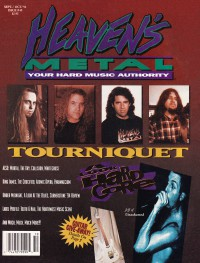

Heaven's MetalSep / Oct 1994, #49
| Cover |
|---|
|  | | Writers in this Issue |
|---|
Beeman, Bob
Crabb II, Kemper B.
Crump, Andrew
Franzen, Frank
Gates, Charles
Hart, David S.
Hershey, Brent
Jenison, David A.
Kaiser, Wendi
MacIntosh, Dan
McPherson, Trevor
Muttillo, David
Rocker, Randy S
Rodgers, Brian
Scheetz, Jeff
Van Pelt, Doug
Z., Fred
|
Cover Feature:
- "On The Road With Tourniquet: Home Sweet Motorhome" by Doug Van Pelt
Article:
- "Hardcore" by David A. Jenison
- "Showing Its Mortality" by Randy S Rocker
- "Unveiling The "New" Whitecross" by David Muttillo
- "Kryin' Over You" by Doug Van Pelt
- "The New King James Version" by David S. Hart
- "The Mad Men Behind Atomic Opera" by Doug Van Pelt
- "Looking Back With The Crucified" by Andrew Crump
- "Exhumed For Your Inspection" by Doug Van Pelt
- "The Future According To Frankie" by Dan MacIntosh
- "HM talks to Brandon Ebel, Founder of Tooth & Nail and all around nice guy" by David A. Jenison
- "Understanding The Blues" by Dan MacIntosh
Metal Tracks:What ... Sez:
- Collision (Gustavo "Gus" Vitureira) by Doug Van Pelt
Northern Exposure:
- "Northern Exposure" by Trevor McPherson
Bands, music scenes, and zines from the Northwest: Vancouver, Seattle Portland, and Salem,
- "Vancouver" by Trevor McPherson
- "Seattle" by Trevor McPherson
- "Portland"
- "Salem" by Trevor McPherson
Album Review:Pick of the Litter:The 7" Scene:Concert Review:Event Review:
- "Cornerstone '94" by Doug Van Pelt
Book Review:
- Glenn Kaiser - The Responsibility of the Christian Musician by Doug Van Pelt
The Christian and Art: "The Sons of Issachar: Knowing What Israel Should Do, Part III" by Kemper B. Crabb II
Pastor Bob by Pastor Bob
Ask Wendi... by Wendi Kaiser
Poster:Licks & Tricks by Jeff Scheetz
HM Back Page: "Watch What You Are Saying!"
|